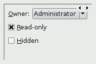
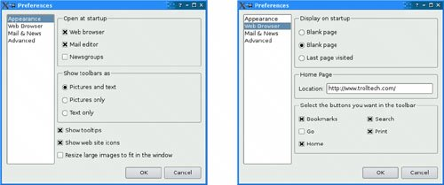

Stacked LayoutsThe QStackedLayout class lays out a set of child widgets, or "pages", and shows only one at a time, hiding the others from the user. The QStackedLayout itself is invisible and provides no intrinsic means for the user to change page. The small arrows and the dark gray frame in Figure 6.5 are provided by Qt Designer to make the layout easier to design with. For convenience, Qt also includes QStackedWidget, which provides a QWidget with a built-in QStackedLayout. Figure 6.5. QStackedLayout The pages are numbered from 0. To make a specific child widget visible, we can call setCurrentIndex() with a page number. The page number for a child widget is available using indexOf(). The Preferences dialog shown in Figure 6.6 is an example that uses QStacked-Layout. The dialog consists of a QListWidget on the left and a QStackedLayout on the right. Each item in the QListWidget corresponds to a different page in the QStackedLayout. Here's the relevant code from the dialog's constructor:
PreferenceDialog::PreferenceDialog(QWidget *parent)
: QDialog(parent)
{
...
listWidget = new QListWidget;
listWidget->addItem(tr("Appearance"));
listWidget->addItem(tr("Web Browser"));
listWidget->addItem(tr("Mail & News"));
listWidget->addItem(tr("Advanced"));
stackedLayout = new QStackedLayout;
stackedLayout->addWidget(appearancePage);
stackedLayout->addWidget(webBrowserPage);
stackedLayout->addWidget(mailAndNewsPage);
stackedLayout->addWidget(advancedPage);
connect(listWidget, SIGNAL(currentRowChanged(int)),
stackedLayout, SLOT(setCurrentIndex(int)));
...
listWidget->setCurrentRow(0);
}
Figure 6.6. Two pages of the Preferences dialogWe create a QListWidget and populate it with the page names. Then we create a QStackedLayout and call addWidget() for each page. We connect the list widget's currentRowChanged(int) signal to the stacked layout's setCurrentIndex(int) to implement the page switching and call setCurrentRow() on the list widget at the end of the constructor to start on page 0. Forms like this are also very easy to create using Qt Designer:
Since we have implemented page switching using predefined signals and slots, the dialog will exhibit the correct behavior when previewed in Qt Designer. |